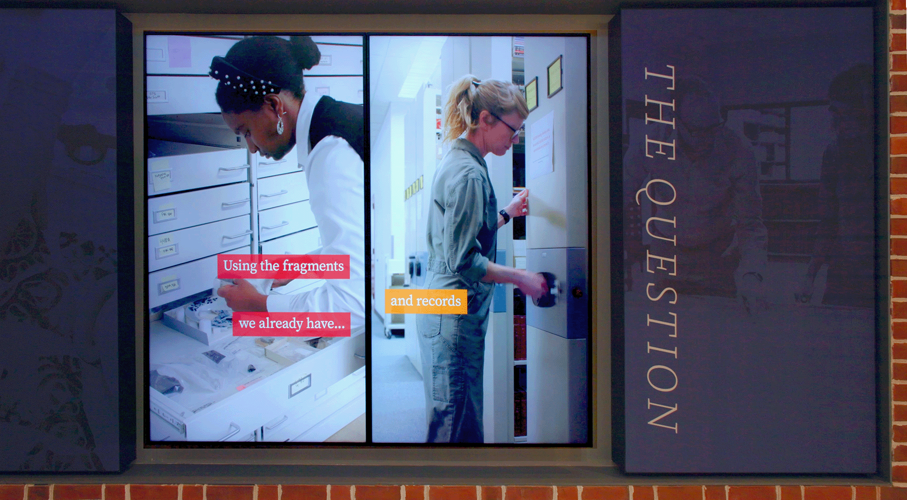
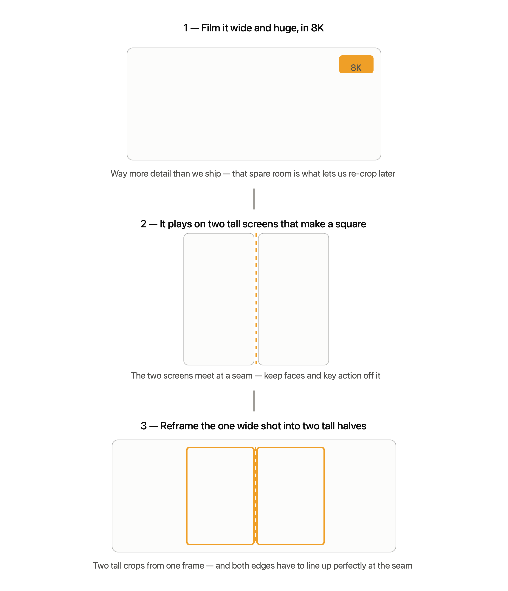

RFP #72 · Professional Photography & Videography Services
Spearhead Trails Portfolio
Jason Brewer · JPBrewer LLC · Director of Photography · FAA Part 107
Thank you for evaluating my proposal. This is a curated portfolio for RFP #72 — the pieces most
relevant to Spearhead Trails, gathered on a single page so you can move through them in order without
leaving the tab. It spans outdoor field production, Part 107 aerial work, and vertical 9:16 cuts.
Scroll straight through, or jump to any piece below.
Prepared for James Marcum, Procurement Specialist, SRRA.
Outdoor field · Virginia landscape · Broadcast-finished
Vertical 9:16 cut
I shot three segments of this national PBS feature out in the Virginia mountains — natural light, real
terrain, changing conditions. A project like this isn't a staged, polished-commercial look; it's
authentic, place-driven footage that holds up for years and lets an audience picture themselves standing
in it. That's the exact register Spearhead Trails calls for, delivered broadcast-ready.
02 · Institutional — Campbell Archaeology Center
Colonial Williamsburg Foundation
8K capture · Aerial + ground · Composed for vertical

I was the videographer and editor behind the permanent installation for Colonial Williamsburg's new
40,000-sq-ft Campbell Archaeology Center — Shot entirely in 8K and composed for a permanent installation of eight 75-inch panels, each mounted vertically and paired into four two-screen displays — reframing high-resolution masters into a non-standard vertical format with no loss of quality.
It's the same discipline your library needs: capture high-resolution masters, compose deliberately for vertical,
and hand over an evergreen asset that runs every day for years. (The finished install is contractually
off social — this is the making-of.)
Filming for two separate vertical screens

03 · Aerial — FAA Part 107
Location Drone Reel
Reveals · Orbits · Establishing shots
A cross-country reel of my aerial work — downtowns, mountain towns, farmland, coastline — produced for
national clients under Part 107. This is the range I'll bring to each trail system: the reveal that gives
a ridge its scale, the orbit that sells a vista, the establishing shot that makes a place look worth the
drive.
04 · Cinematography — Central Virginia
Central Virginia Neighborhoods
Native 9:16 · Virginia · Ground-based
Vertical 9:16 cut
A short-form series on Richmond's neighborhoods, shot and composed for 9:16 from the ground up, in real
light and real conditions — built to make a viewer want to go see the place for themselves.
The opening drone shot took 3 days on location on the banks of the James river before I could accurately find a safe spot to takeoff and land while also predicting the train schedules while simultaneously accounting for angle of the sun, cloud coverage, and many other variables.
05 · Aerial — Pacific Northwest
Mountain Range
Aerial · Outdoor · Scenic
Aerial and scenic cinematography of a Pacific Northwest mountain range, shot for a national client. It's
the kind of high-elevation outdoor coverage I'd bring to your ridgelines and fall color — reveals and
slow passes that give a landscape its scale and let a viewer feel the place before they've ever driven to
it.
06 · Aerial — National Brand
Precision Drone Move
Aerial · Campaign-grade · Vertical 9:16
Vertical 9:16 cut
A choreographed aerial produced for a national franchise brand and delivered as a vertical Reel —
controlled, campaign-grade drone work built for social placement. Proof the aerial coverage arrives
ready to post, not just ready to edit.
Zero Waste — PBS Science Matters · Digital Series · Field production for a nationally broadcast PBS digital series on circular design and sustainability — the same public-media ecosystem your VTC-supported tourism initiative lives in. Authentic, experience-driven storytelling, professionally color-corrected and broadcast-finished, and delivered in vertical 9:16 for short-form social — the same capture-to-Reels workflow this project is built around. A broadcast-quality field production that lives on as evergreen, reusable content, with clean vertical cuts ready for the feed.
I opened with two flagship pieces — a national PBS documentary and a permanent Colonial Williamsburg
installation — to show you the standard I hold every shoot to. Everything after is the aerial and
outdoor, place-driven work I'd bring to Spearhead Trails: Part 107 flying, 9:16-ready composition, and
footage built to make someone want to get out here and ride.
Jason Brewer · JPBrewer LLC — Richmond / Henrico, VA
FAA Part 107 Remote Pilot since 2016 jpaulbrewer@gmail.com · (804) 461-3040
Full portfolio & additional credits: jasonbrewer.net